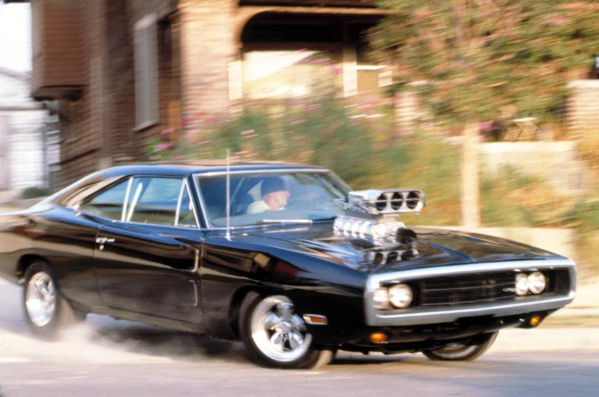
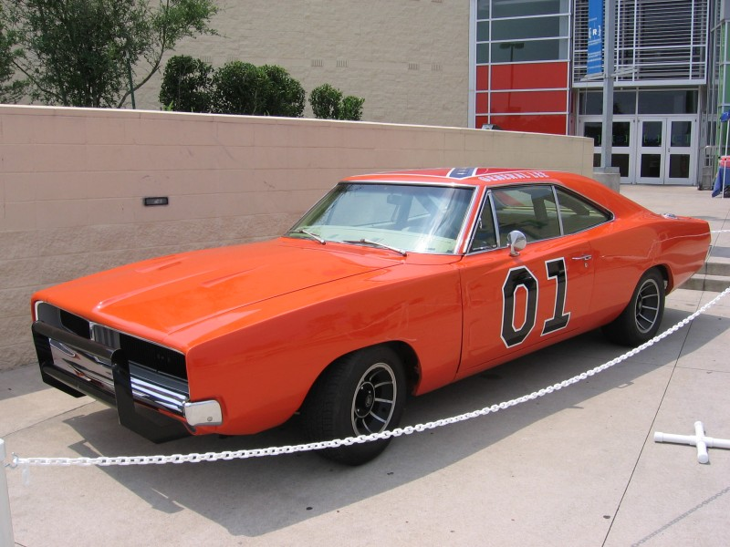
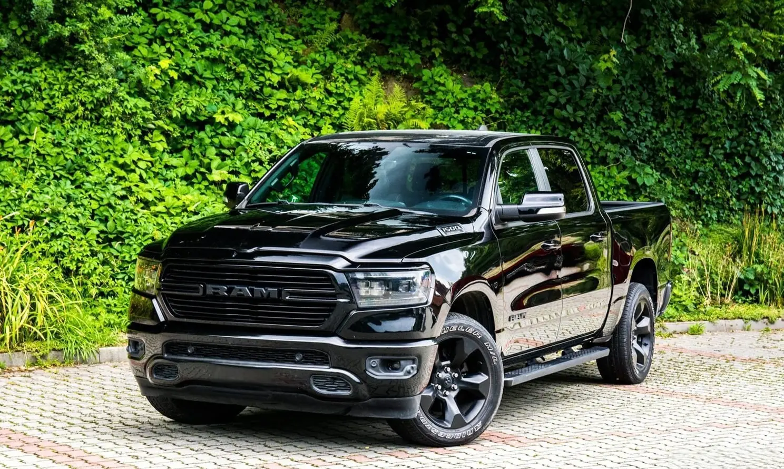
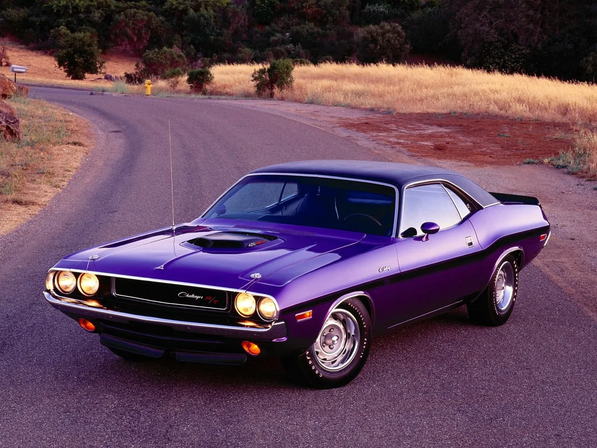
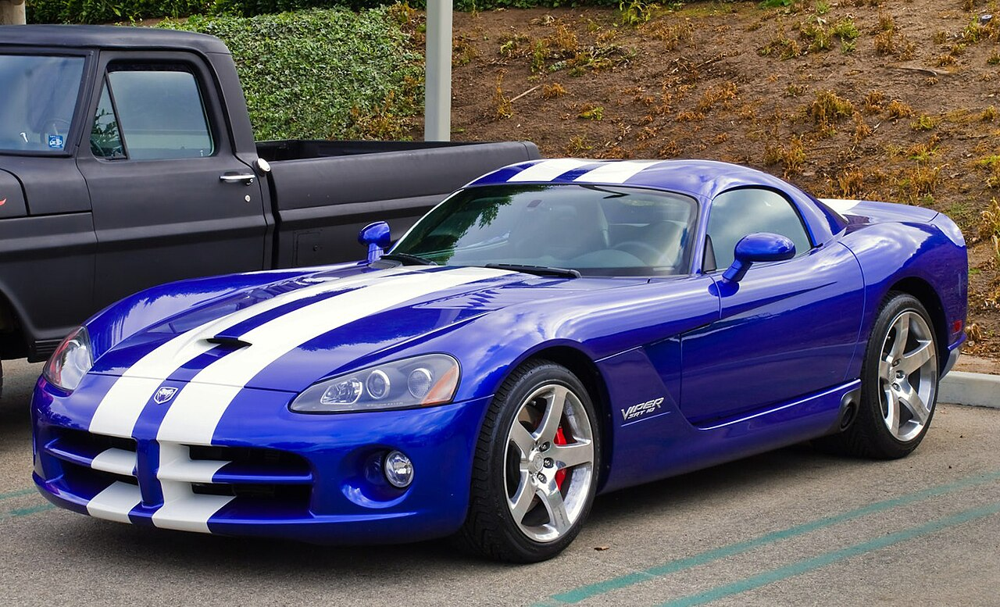

Dodge Charger RT 1970
Samochód znany z filmu szybcy i wściekli prowadzony przez Dominika Toretto który jest głównym bohaterem serii filmów. Samochód ten jest najlepiej znanym dodge'm poprzez jego wielki silnik V8 posiadający 900 koni mechanicznych

Dodge Charger General Lee
Ikoniczny samochód z 1969 roku znany z amerykańskiego serialu The Dukes of Hazzard. Zyskał sławę dzięki kaskaderskim scenom i jego wyczyną oraz jego rozpoznawalnym malowaniu z flagą na dachu.

Dodge Ram 1500
Pomimo że Ram stał się osobną marką, historycznie Dodge był znany z solidnych pick-upów. Ram 1500 jest ceniony za niezawodność, Był bardzo znany z powodu użytku do przenoszenia różnych rzeczy.

Dodge Challanger 1970
Pierwszy model Dodge Challanger, powstał w 1969 roku jako klasyczny amerykański muscle car. Konkurował z Fordem Mustangiem i Chevroletem Camaro.

Dodge Viper SRT-10
Jeden z najbardziej kultowych samochodów z serii Viper. Był produkowany w latach 2003-2010. Posiada silnik V10, zaprojektowany z myślą o maksymalnej mocy i wydajności na torze jak i drodze.
Podsumowanie modeli
| Model | Z czego zabłysnął |
|---|---|
| Dodge Charger RT 1970 | Szybcy i Wściekli |
| Dodge Charger General Lee | Serial The Dukes of Hazzard |
| Dodge Ram 1500 | Niezawodność |
| Dodge Challanger 1970 | Szybcy i wściekli |
| Dodge Viper SRT-10 | Jeden z najpotężniejszych silników |